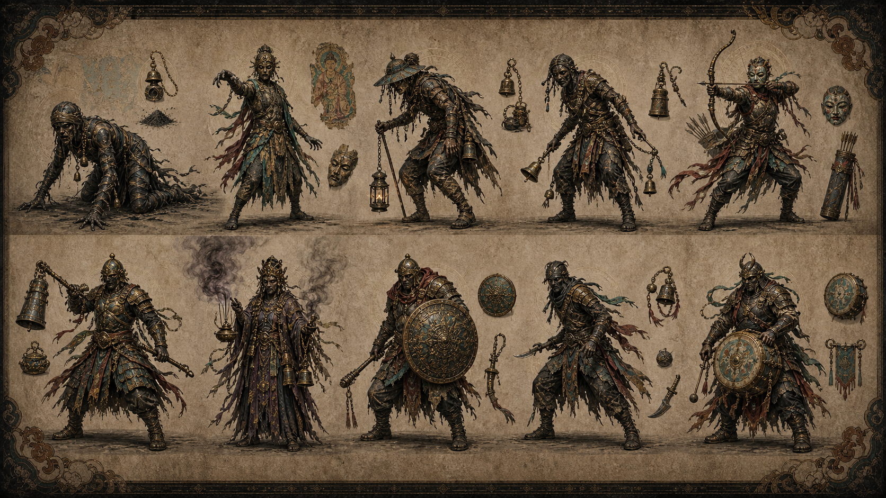
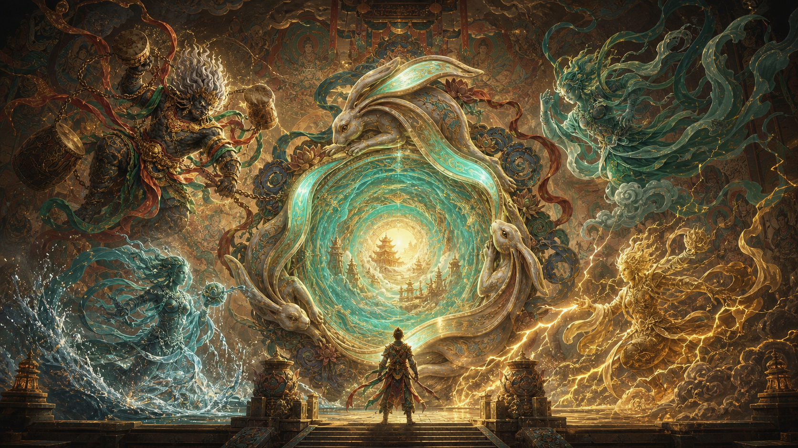
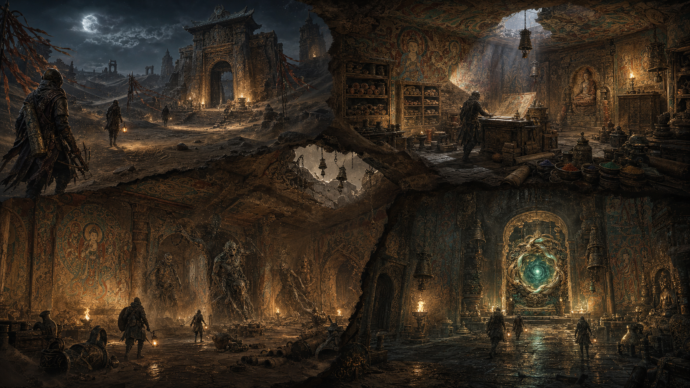
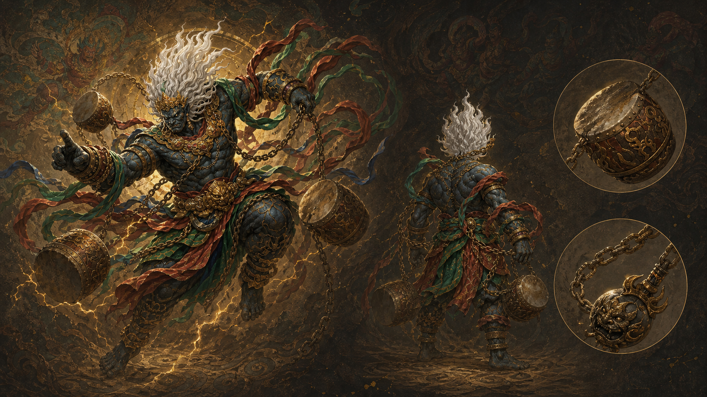
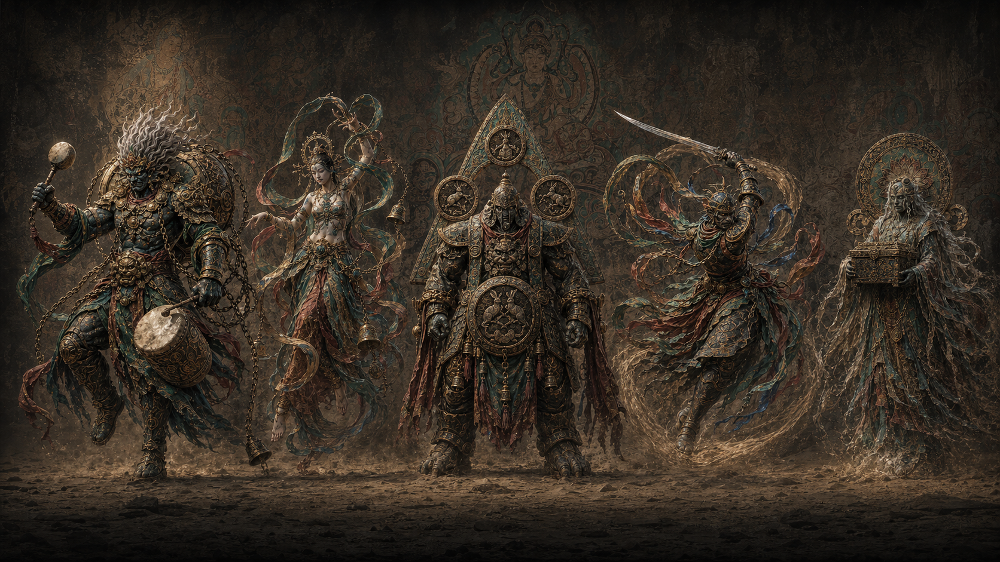
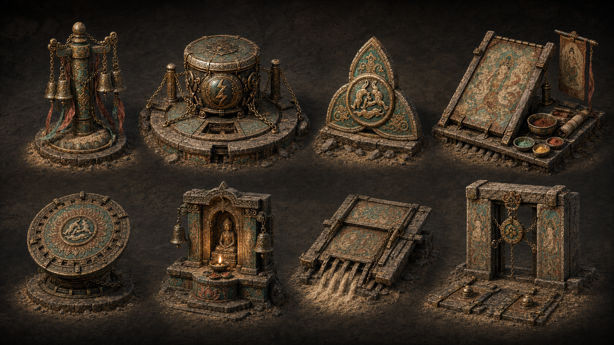
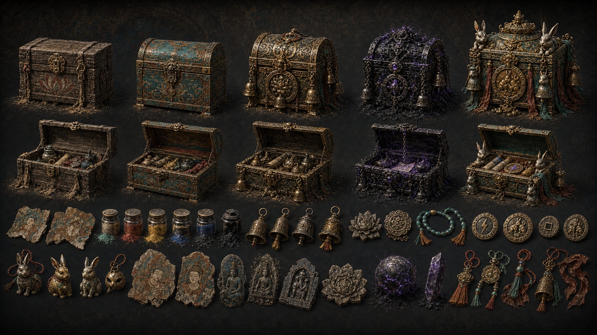
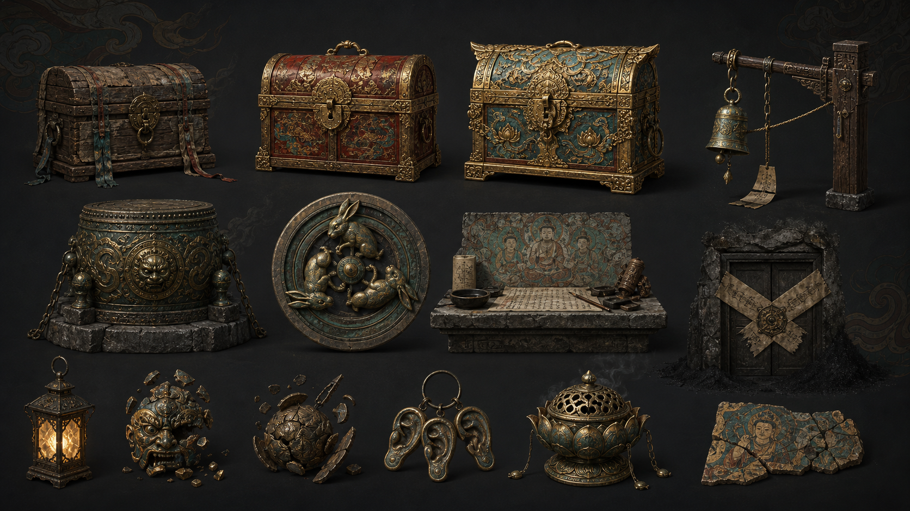

进门黑沙遗址入口
三人小队逼近三兔门。
三人小队逼近三兔门。

巡游、追击、干扰听声。

击鼓破盾，立刻推进。

守住三段共鸣后撤出。
High Resolution Art
三人小队在风沙中逼近壁画门，远处雷神鼓影压住整片遗址。

三只玉兔围绕星旋构成门体，承担终局撤离、深层入口和宣传识别。
雷链劈开黑沙，鼓声短暂破盾，全队在窗口内推进或撤退。
三名玩家携带灯笼、盾牌和遗物筒，在雷云下进入三兔壁画门。
巡游者、铃铛猎手、弓手、盾卫和祭司从壁画残影中醒来，逐层增加追击压力。

强调雷神压迫、壁画门尺度和小队进入遗址前的戏剧张力。
雷鼓响起后敌人短暂破盾，门区也会暴露在更猛烈的追击中。
风雨雷电在三兔门外汇合，终局撤离变成一场守门仪式。

小队从外部黑沙遗址进入洞窟，建立探索前的压迫感。

巨大的遗址被黑沙撕开，队伍在废墟尺度中显得渺小而脆弱。

黑沙怪物从壁面与地面中剥离，逼迫队伍在狭窄门厅里抢节奏。

风雨雷电四神之一，负责雷鼓、节奏窗口和门区压迫。

雷鼓、飘带、金饰和壁画纹样组成雷神守护者的核心轮廓。

壁画石、铜面具和兔耳印构成门区守卫。

中高压 PvE 节点，能干扰听声判断并逼迫队伍改变撤离路线。

与声音辨位和三兔门区相连，承担路标、风险提示与开门条件。

铜铃、壁画残卷、颜料罐、雷鼓碎片和黑沙遗物。

对应低、中、高收益，也对应不同开箱噪音、时间和被发现风险。

三档宝箱、铜铃机关、拓印台、封印门与核心掉落物的统一设定图。

石窟入口、三兔门和黑沙风共同组成撤离前的压迫空间。
动态背景和右侧展窗同步呈现黑沙、雷鼓、三兔门和撤离压力。
02 再看美术主视觉、敌人、机关、终局门直接说明玩法压力。
03 理解循环听声、搜物、击鼓、守门、撤离，六步完成一局。
04 展开资料详细节点、世界观和系统说明放到后段按需查看。
Game Pitch
玩家只做三件事：找价值、控风险、全员撤离。复杂设定都转译成可看、可听、可决策的局内压力。
铜铃、风沙、壁面回响和怪物噪音构成可学习的声音地图。
宝物越稀有，负重、暴露声和黑沙诅咒越高。
雷鼓打断怪物节奏，三段共鸣提示三人开门、守门与撤离。
Key Features
声音告诉你哪里有价值，黑沙逼你做取舍，三兔门把全队拉进最后的撤离倒计时。
玩家用铜铃、脚步、风沙和壁面回响判断前方价值与危险，队伍共享标记后决定继续深入还是提前撤走。
高价值遗物会提高负重、噪音与诅咒压力，促成“还拿不拿”的团队讨论。
兔耳印触发三段共鸣，队伍围绕开门、守门、撤离自然分工，形成一局终点的强记忆。
Playable Loop
选路线、带工具、确认门区目标。
用声纹判断遗物、敌人和兔耳印方向。
稀有宝物提高收益，也提高负重与暴露。
击鼓破盾，抢出短窗口推进或撤退。
三段共鸣提示开门、守门、全员撤离。
带出宝物，解锁壁画线索和下一层风险。
玩家用声音脉冲判断风险，不依赖大量 UI 提示。
拿得越多越值钱，也越重、越响、越容易被追上。
三人不绑定职业，默认形成听声标记、搜物搬运、雷鼓守门三种临场职责。
3-Player Squad
三人不锁职业，只围绕局内目标临时分工：给方向、做取舍、抢窗口。
判断铜铃、脚步与壁面回响，标出遗物和危险。
管理背包和负重，决定保留、交换或丢弃宝物。
用雷鼓打断追击，守住三兔门区最后几秒。
Core Node Breakdown
听声找路，搜物取舍，雷鼓抢节奏，三兔门撤离。三人不被职业锁死，只围绕声音、负重和门区倒计时做团队决策。

玩家选择路线、背包容量、初始工具和撤离目标。系统给出本局危险区、出生点、门区条件和预期收益。
玩家释放短促听声脉冲，根据铜铃、壁面回响、沙噪和脚步声标记方向，形成三人共享路线。
玩家拾取壁画残卷、雷鼓碎片、颜料罐和兔耳印。越稀有越值钱，也越重、越响、越容易引发黑沙诅咒。
雷神的鼓点不再做复杂四神协作，而是转为全队可理解的节奏窗口：击鼓破盾，争取推进、救援或撤退的几秒机会。
兔耳印唤醒壁画门，门区出现三段共鸣。第一段开门，第二段守门，第三段撤离，三人围绕倒计时自然分工。
带出的宝物进入仓库，壁画线索推进章节，黑沙风险在下一局升级，形成“再下一层”的驱动力。
World & Motif
三兔共耳在游戏里不是说明牌，而是玩家一眼能懂的出口信号：兔耳印、壁画门、三段共鸣都指向撤离。
敦煌三兔共耳与欧亚多地三兔纹样共享“追逐成环、三耳成三角”的结构。游戏把它转译为门区、钥印、声音共鸣和宝物图案，帮助玩家把文化符号直接记成玩法规则。
天顶纹样记录三兔旋转，像一扇向上的门。
图像穿过商路和宗教空间，留下不同地域的变体。
遗址中的纹样被雷鼓唤醒，成为门区共鸣机关。